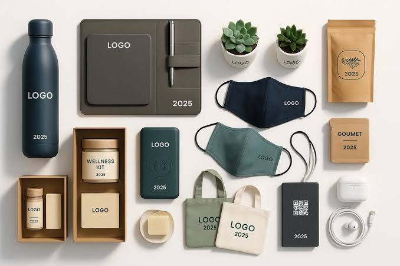

Resposta breve
Confirme texto, versão, face, orientação e medidas na maquete. Separe essa revisão da avaliação física de cor, toque, aderência ou comportamento em uso.
- ConteúdoO que vai ser reproduzido
- ComposiçãoOnde e com que dimensão
- AmostraComo fica no artigo
Identifique o alcance da maquete
A maquete representa a composição proposta: texto, posicionamento e proporções. Comece por identificar artigo, variante e versão da arte. Se a representação for genérica, confirme as medidas que a relacionam com o artigo escolhido. Para cor, uma simulação depende das condições de visualização; para aderência, é necessário avaliar o suporte real. ↗ ↗
1. Confira os dados, não apenas o aspeto
Leia nomes, contactos, datas e acentos sem depender da memória. Compare com o texto de origem e confirme se todos os elementos pertencem à versão final. Num trabalho com nomes individuais, valide também a lista e a correspondência de cada nome ao artigo; uma maquete geral não valida todas as variantes.
2. Localize a marca com referências claras
Confirme face, orientação, distância a elementos da peça e dimensão. Uma indicação como «centrado» pode referir-se ao artigo inteiro ou apenas à zona disponível. Peça que a área aprovada fique distinguida de costuras, clips, tampas e outras zonas que condicionam a aplicação. Não deduza medidas pelo tamanho da imagem no ecrã.
3. Separe composição e resultado físico
Reveja a posição numa representação com medidas explícitas, quando aplicável. Para cor, cobertura, relevo ou toque decisivos, defina a amostra necessária. Numa peça com componentes distintos, assinale a face e o componente a que a maquete corresponde. Uma imagem do conjunto não esclarece, sozinha, qual a superfície que será personalizada.

4. Feche a revisão por escrito
Concentre as correções numa lista e peça uma nova versão que as incorpore. Registe o identificador aprovado, os artigos e variantes abrangidos e as condições ainda pendentes. Uma resposta como «parece bem» pode deixar dúvidas sobre o alcance da aprovação.
Erros frequentes e prevenção
Aprovar a imagem anterior após uma correção
Confira o número ou nome da versão e compare os pontos alterados.
Confundir simulação com prova de resistência
Acorde um ensaio adequado ao uso antes de validar esse requisito.
Lista de verificação antes de avançar
- Artigo, variante e componentes certos.
- Texto, nomes e versão final conferidos.
- Posição, orientação e medidas explícitas.
- Âmbito da aprovação e amostras pendentes registados.
Perguntas frequentes
Uma maquete confirma resistência à lavagem?
Não. A simulação revê composição; esse requisito exige documentação ou verificação adequada à combinação real.
O que faço depois de pedir uma correção?
Reveja uma nova versão identificada e confirme os pontos alterados. A aprovação deve referir-se a essa versão e às variantes abrangidas.
Fontes, âmbito e revisão
Os passos e as listas são recomendações editoriais. As fontes sustentam os princípios identificados; condições de artigo, material, arte e processo precisam de confirmação específica.
-
Proofing colors
Adobe · Consulta:Prova de ecrã e condições de visualização; não estabelece comportamento físico de uma personalização.
-
Features of Inks — teste no objeto real
Roland DG · Consulta:Tratamentos de superfície e avaliação de aderência no sistema documentado; não generalizar a outros equipamentos ou tintas.
Conteúdo revisto em .